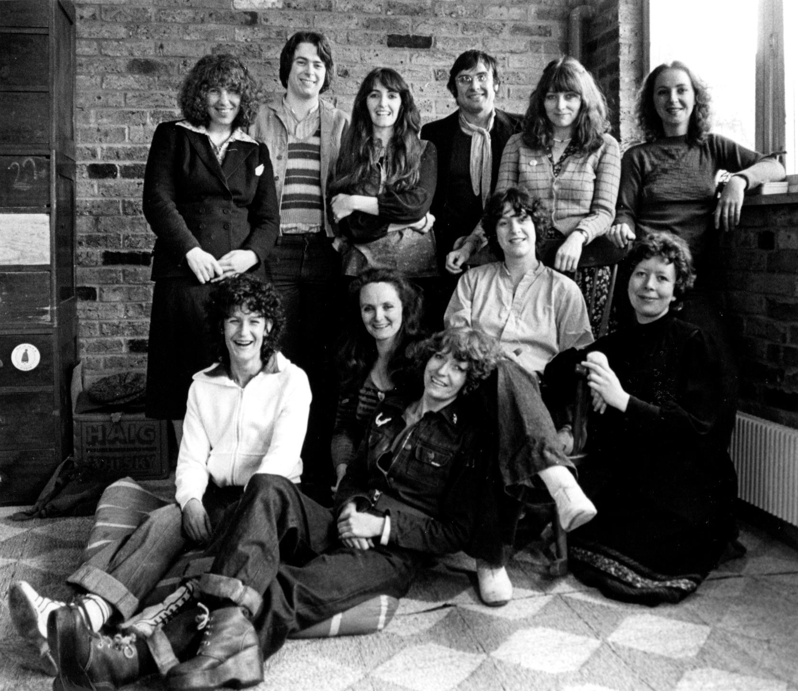
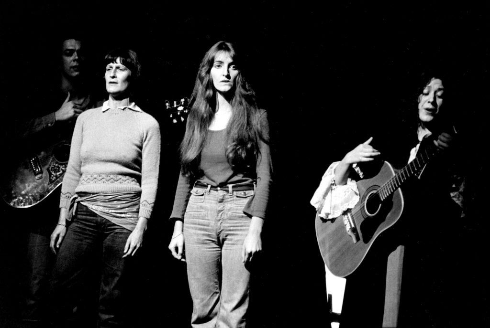
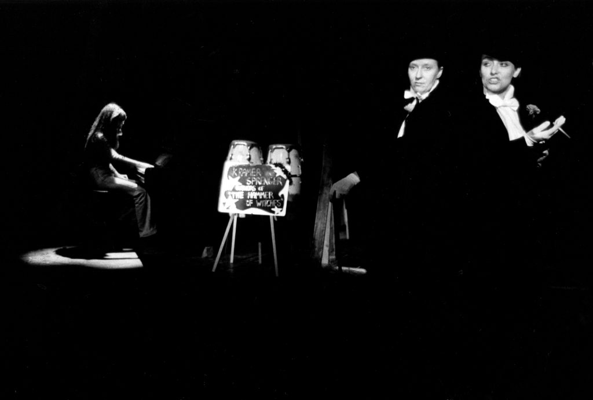

Writing
|  |
In 1976, Caryl Churchill met actors Chris Bowler and Gillian Hanna at an abortion march. Bowler and Hanna had just founded a London socialist-feminist theater company called the Monstrous Regiment, who, like Churchill, “were thinking they would like to do a play about witches.”
Monstrous Regiment promptly commissioned 'Vinegar Tom.' At this point in her life and career, Churchill was both a fledgling playwright and a fledgling feminist, coming into her own as a political artist a few years before she found widespread success with 'Cloud Nine' and 'Top Girls.'
Churchill worked in solitude for much of the 1970s. Most of her output until 'Vinegar Tom' was radio plays she wrote at home while raising her children. Chris Bowler of the Monstrous Regiment, who originated the role of Ellen, said Churchill described her writing career and politicalization before 'Vinegar Tom' as solitary: “She felt that being at home she missed out on things we were involved in.”
'Vinegar Tom' marks her first time writing for a specific company of actors, as well as Monstrous Regiment’s first time working directly with a playwright. In her author’s note, Churchill writes “I felt briefly shy and daunted, wondering if I would be acceptable, then happy and stimulated by the discovery of shared ideas and the enormous energy and feeling of possibilities in the still new company.”
Churchill wrote the first draft of 'Vinegar Tom,' including two songs, in three days and gave it to Monstrous Regiment, then spent the next few months writing 'Light Shining in Buckinghamshire' with Joint Stock Theatre Company. (Joint Stock would go on to premiere 'Cloud Nine.') When she returned to 'Vinegar Tom,' she created the character Betty to be played by a new member of Monstrous Regiment and wrote the rest of the songs.
|  |  |
The Monstrous Regiment note in the back of our scripts says “The writer/group collaboration was so close, with Caryl attending all rehearsals, it isn’t easy to pinpoint where specific ideas came from.”
“Remember your excitement at the first time having a play written specifically for you,” Churchill said in retrospect regarding Monstrous Regiment. “And mine at for the first time writing a play specifically for a company. Thank you for the energy, exchange of ideas, friendship and a lot of sheer delight."
This play was born from a sense of ensemble in a performance context and from the need to build and connect to a collective history as women.

Caryl Churchill
is a British socialist-feminist playwright. Her first plays were produced by student groups when she was at Oxford, graduating in 1960. She married a year later and spent the next decade writing radio plays while raising three sons at home, an experience she called "politicizing." Her first professional stage production was 'Owners' at the Royal Court Theatre Upstairs in London in 1972. Royal Court would go on to produce many of her plays including 'Cloud Nine' and 'Top Girls.'
Churchill is regarded as one of Britain’s most influential playwrights, whose work varies widely in subject matter and style but is nearly always political or feminist in nature.
Monstrous Regiment
was formed in 1975 by a collective of female British actors frustrated with the roles available to women. Its founders were Chris Bowler, Linda Broughton, Helen Glavin, Gillian Hanna and Mary McCusker, all of whom appeared in the first production of 'Vinegar Tom.' They set out to creat political theater that centered women and produced a total of 30 shows before becoming dormant in 1993.
As of fall 2018, there was very little information about the Monstrous Regiment online. Last month, the Victoria & Albert Museum and the Monstrous Regiment launched the company’s digitized archive.
Witches, Midwives and Nurses and second-wave feminism
Both Churchill and the company of Monstrous Regiment were interested in witches in 1976, which Churchill connects to an influential pamphlet called Witches, Midwives and Nurses: A History of Women Healers by Barbara Ehrenreich and Deirdre English. Published by The Feminist Press at City University New York in 1973, it traces the purge of women from medical practice to the creation of the nursing industry.
“Medicine is part of our heritage as women, our history, our birthright,” the introduction declares. Women who healed “were called wise women by the people, witches and charlatans by the authorities.”
It relates the masculinization of medicine to class struggle and wealth. Cunningwomen and wise women treated the masses (Ellen’s “I don’t charge but you’ll bring a little present”), while male doctors reserved their services for the rich — how Betty’s landowner father can afford a doctor.

Beyond witch trials, obstetricians in America campaigned against the profession of midwifery, which was dominated in the early 20th century by immigrant women. The creation of nursing welcomed women back into professional medicine, but inherently subordinate to male doctors.
Witches, Midwives and Nurses presents all this as evidence modern medicine serves men and the upper class, and so women’s struggle to treat themselves with abortion, contraception and other means is one fought against systemic patriarchy and classism. Some key quotes:
Second-wave feminism of the 1960s and 70s centered reproductive health. British Parliament passed the Abortion Act in 1967 while we decided Roe v. Wade in 1973. In the UK, feminists organized as the Women’s Liberation Movement, while in the US Ehrenreich and English are part of the Women’s Health Movement.
I think it’s pertinent to say second-wave feminism wasn’t terribly inclusive. The Women’s Liberation Movement organized a series of annual conferences in the 1970s that explicitly codify their demands:
- Equal pay
- Equal educational and job opportunities
- Free contraception and abortion on demand
- Free 24-hour nurseries
- Legal and financial independence for all women (added in Edinburgh, 1974)
- The right to a self-defined sexuality. An end to discrimination against lesbians (Edinburgh, 1974)
- Freedom for all women from intimidation by the threat or use of violence or sexual coercion regardless of marital status; and an end to the laws, assumptions and institutions which perpetuate male dominance and aggression to women (Birmingham, 1978)
I dig all of the above, but you see Churchill, Ehrenreich and English casually throw around “blacks” and “Jews” and generally demonstrate a disregard for how race exacerbates oppression. The Women’s Health and Women’s Liberation Movements would also crumble if asked to include trans women and acknowledge not everyone who menstruates and needs contraception is a woman.
While Witches, Midwives and Nurses criticizes feminine stereotypes, it courts the trans-exclusionary idea that biological sex does entail inherent differences — just not the ones imposed onto women by men throughout history. Performing Vinegar Tom responsibly in 2019 takes recognizing its origin in a dated mode of thought, which doesn’t diminish its merit — just complicates it.